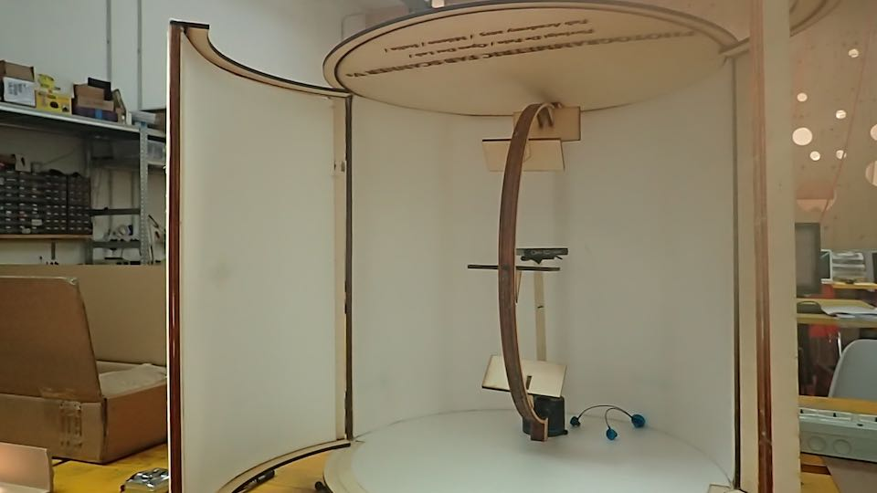
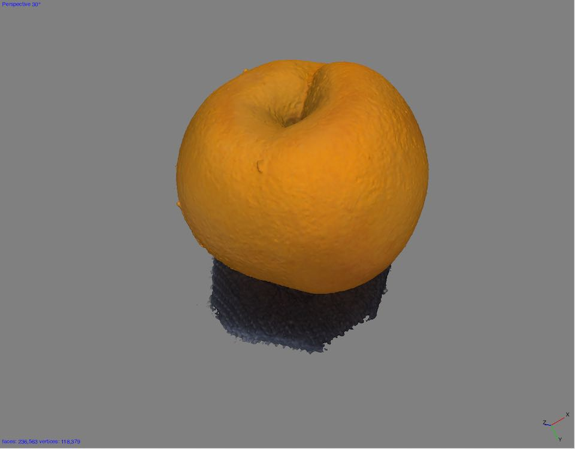

****************************************************************************************************************
****************************************************************************************************************
THE TEST I DID WITH THIS PROTOTYPE GAVE ME THE CERTAINTY THAT MY CONCEPT FOR THE SCANNER WORKED
V0.3 // INANIMATE VERSION : structural prototype , illuminated, fitted with supports for the simulation of the machine movements and with a Rotator Graduated Head to simulate the precise rotation of the object to the scanned.
Consisting of :
- 5mm lasered plywood external structure
- 5mm lasered plywood rail with 5 integrated fixed supports (regulated at +90° / +45°/ 0°/ -45° ) for the positioning of the photographic camera.
- Rotator Graduated Head
- 2 strips of 12 V LEDs
- Reflecting walls in Depron
- Doors system -
I was really, really happy when I completed this prototype.
DEVELOPMENT : Here are some images of the digital fabrication of the box.
--> First Step : Development of the 3D project with Rhino
-->Second Step : Cutting the plywood structure and DEPRON with a laser cutter machine
The laser machine settings to cut the DEPRON, an interesting, flexible material that can be cut with a laser-cutter; it has high reflective properties and has been used for the external wall.
FINAL RESULT
The prototype with the open doors

The prototype with closed door surrounded by black fabric produces the best conditions of light inside
The LED light system switch on
GIF SIMULATION
CONCLUSION
I am delighted to show you WORLD, the result of photogrammetric photo capture processand and post processing result (Agisof Photoscan Softwere) using the V0.3 // INANIMATE VERSION.
